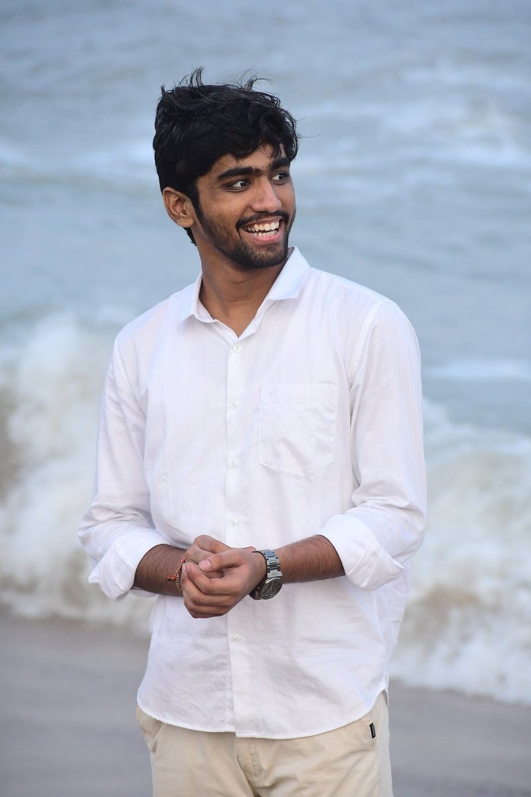
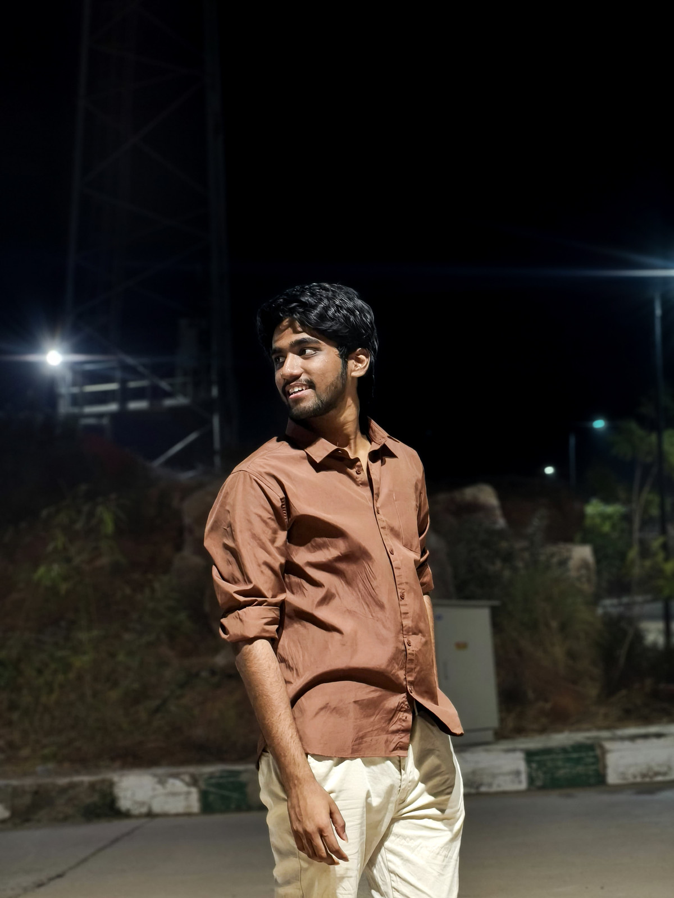
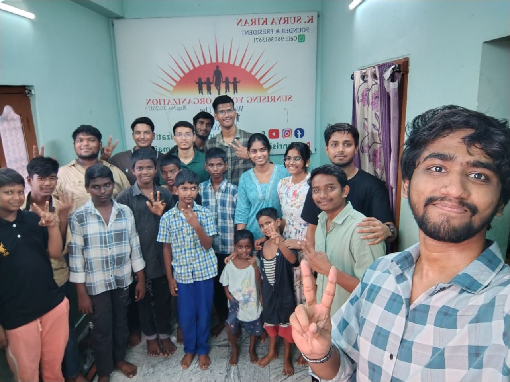

IIITDM Kurnool · B.Tech, Artificial Intelligence & Data Science · 2024–2028
Duvva Sai Vivek
Artificial Intelligence and Data Science undergraduate building applied machine learning systems.
I build machine learning and generative AI systems end to end: data pipelines, model training and evaluation, and the web interfaces that put them in front of users. Recent work includes fraud detection on imbalanced transaction data, a multimodal toxicity classifier, and an adaptive learning platform. I am currently seeking an AI/ML internship.
3 internships8 projects5 hackathons6th of 240+ teams, Agentica 2.0

About
Background

I am a B.Tech student (2024–2028) in Artificial Intelligence and Data Science at the Indian Institute of Information Technology, Design and Manufacturing, Kurnool.
Through internships at Elevate Labs, Infosys Springboard, and IBM SkillsBuild I have built a fraud-detection model on imbalanced transaction data, a research-paper summarisation pipeline, and a lecture-audio-to-notes system. I also compete in national hackathons; with Civility.ai, a multimodal toxicity classifier, my team placed 6th of 240+ at Agentica 2.0 (IIIT Sricity) in January 2026.
Outside coursework I am treasurer of the institute’s National Service Scheme unit and coordinator of Novella, its reading club. Both are described under Activities.
- Institution
- Indian Institute of Information Technology, Design and Manufacturing, Kurnool
- Program
- B.Tech, Artificial Intelligence and Data Science
- Graduation
- 2028
- Location
- Kurnool, Andhra Pradesh, India
- Languages
- English, Telugu, Hindi
- Areas of work
- Generative AI and retrieval systems; text and multimodal classification; anomaly detection on imbalanced data; full-stack delivery of machine learning workflows
Projects
Selected projects
Eight projects from internships, hackathons, and independent work, in order of significance.
-
Civility.ai
Multimodal toxicity classifier for text and images, with a FastAPI inference service and a live moderation dashboard.
- Stack
- PyTorch, Hugging Face Transformers, FastAPI, React
- Links
-
Scholarium
Adaptive learning platform that generates DAG-structured roadmaps and quizzes, with MD5-keyed prompt caching and a hybrid PostgreSQL and MongoDB store.
- Stack
- React 18, Django REST Framework, React Flow, PostgreSQL, MongoDB
- Links
- Repository ·
-
SafeSwipe
Fraud detection on severely imbalanced transaction data, combining XGBoost with Local Outlier Factor and threshold tuning for precision.
- Stack
- XGBoost, Scikit-Learn, Streamlit, FastAPI
- Links
- Repository ·
-
Lecture-Lens
Lecture audio to structured revision notes: chunked speech-to-text, summarisation, formula extraction, and generated quiz questions.
- Stack
- Speech-to-text, NLP chunking, generative summarisation, Python
- Links
- Repository ·
-
Connect IQ
Developer-to-opportunity matching using sentence embeddings and cosine similarity, served through a Streamlit interface.
- Stack
- Sentence Transformers, cosine similarity, Streamlit, Python
- Links
- Repository ·
-
Skill Drift Monitor
Scrapes 100+ job listings, compares them with course syllabi, and reports curriculum gaps over time.
- Stack
- Web scraping, NLP extraction, time-series analysis, Streamlit
- Links
- Repository ·
-
AIgnite Order Assistant
Conversational order-tracking assistant built on Gemini Flash with retrieval over a menu and order knowledge base.
- Stack
- Gemini Flash, RAG, LangChain, FastAPI
- Links
- Repository ·
-
Campus Hustle
2D runner game in Unity and C# with procedural obstacles and a WebGL build.
- Stack
- Unity, C#, 2D physics, WebGL
- Links
- Repository ·
Skills
Skills
Languages, libraries, and tools used in the projects above.
- Languages
- Python, C, C++, C#, JavaScript, SQL
- AI and machine learning
- PyTorch, Scikit-Learn, XGBoost, NLP and text processing, RAG architectures, anomaly detection
- Frameworks and web
- Django REST Framework, React 18, Streamlit, React Flow, Unity
- Data and tools
- NumPy, pandas, PostgreSQL, MongoDB, Git and GitHub, Matplotlib and Seaborn
Activities
Beyond coursework
Two roles at IIITDM Kurnool, both held since 2025: the accounts of the National Service Scheme unit, and the institute’s reading club.
-

Community visit with the NSS unit Treasurer, National Service Scheme
NSS unit, IIITDM Kurnool · 2025–present
I keep the unit’s accounts: planning the budget, allocating funds to each programme, and reporting expenses to the institute. The unit runs blood donation camps, cleanliness drives, and educational outreach to nearby schools, and I handle the budgeting and logistics behind them.
- Organisation
- National Service Scheme, IIITDM Kurnool unit
- Responsibilities
- Budget planning, fund allocation, expense accounting, event logistics
- Scale
- Funds allocated and audited across 15+ campus and community drives
-
Coordinator, Novella
The reading club, IIITDM Kurnool · 2025–present
Novella is the institute’s reading club. I run its weekly reading circles and review sessions, curate the recommendation lists, and organise the reading marathons and themed gatherings that bring students from different batches together.
- Organisation
- Novella, the reading club at IIITDM Kurnool
- Responsibilities
- Weekly reading circles, literary reviews, curated recommendations, event planning
- Format
- Peer-led discussion roundtables, open to all batches
Contact
Contact
I am seeking an AI/ML internship for 2026 and am open to research and project collaborations. Email is the most reliable way to reach me.
- Phone
- +91 80197 92969
- Location
- Kurnool, Andhra Pradesh, India
- linkedin.com/in/duvvasaivivek
- GitHub
- github.com/duvvasaivivek
- Resume
- Resume (PDF)